Text
GPT-5.6 · Claude Opus 5
Image
Nano Banana · FLUX.3
Video
Veo · Sora
Audio
Whisper · Suno
Pathology
UNI2 · OpenMidnight
Protein
AlphaFold · ESM
Weather
Aurora · Prithvi WxC
?
Neuroimaging
Why not neuroimaging?
Which representation would you choose for a
general-purpose fMRI foundation model?
parcels or surface or volume
Paul Scotti CTO and Co-founder, Sophont sophont.med
Research led by Connor Lane
sophont.med/blog/cortexmae
github.com/MedARC-AI/Brainmarks
Developed 100% publicly and Apache 2.0 open-sourced by the MedARC Discord medarc.ai
Text
GPT-5.6 · Claude Opus 5
Image
Nano Banana · FLUX.3
Video
Veo · Sora
Audio
Whisper · Suno
Pathology
UNI2 · OpenMidnight
Protein
AlphaFold · ESM
Weather
Aurora · Prithvi WxC
?
Neuroimaging
Why not neuroimaging?
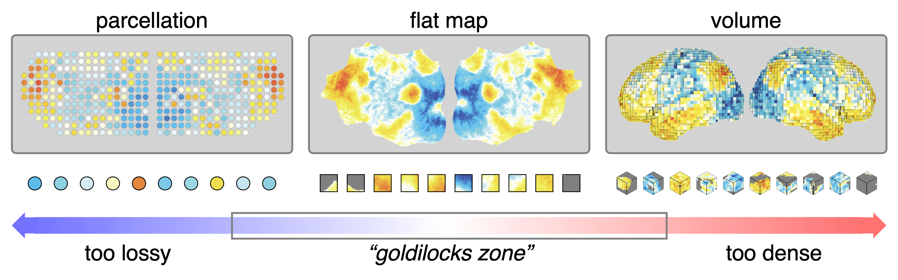
parcels | 1d scalars over time
surface | 2d patches over time
volume | 3d cubes over time
Nearby cortical locations remain nearby in the image.
Every time-series becomes ordinary video.
Simply drop in standard video SSL architectures.
Self-supervised ViT-B encoder.
The encoder sees 10% of space-time patches and predicts the rest, no labels. About 28 hours on one H100.
Averaged over 100 random masks, predictable structure survives and noise is left behind.
NSD data, never seen in training. Original data (left), model reconstruction (right).
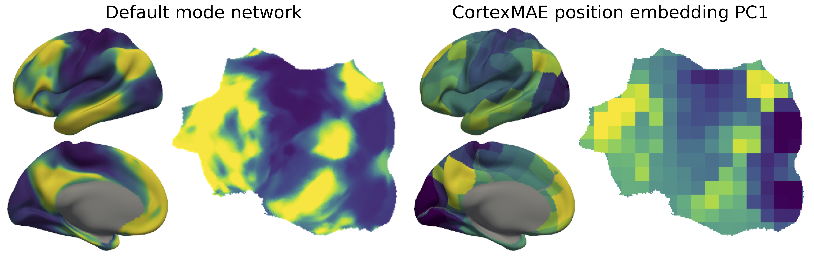
The first principal component of the learned spatial position embedding matches the brain's principal functional gradient.
Pretraining: 90% of space-time patches are masked, and encoder and decoder train jointly to reconstruct them. No labels anywhere.
After pretraining, the decoder is thrown away — it only existed to force good features. The encoder keeps its weights and sees full clips.
Every new 16 s clip becomes 364 latent vectors — one forward pass through the frozen encoder, reused by every task.
Only a tiny probe trains per task: attentive probe for dynamic state, logistic probe for subject traits. Labels enter here, and only here.
16 s of fMRI · flat map
Freeze the foundation model. Input an fMRI time series through the pretrained encoder.
Read out latents. One forward pass produces 364 × 768 values for each 16s time series.
Train/eval a lightweight adapter. E.g., mean pool the latents and fit linear regression.
Prior papers share dataset sources, but not curation, preprocessing, subject splits, or evaluation.
16s of fMRI activity per trial
One resting-state scan per person
Which of 21 cognitive conditions is the subject in, from a 16 s clip?
21 conditions from 6 of the 7 HCP task batteries (gambling omitted), following the setup of prior task-decoding work (Zhang et al. 2021; Rastegarnia et al. 2023).
Which of 24 object categories is the subject viewing, from a 16 s clip?
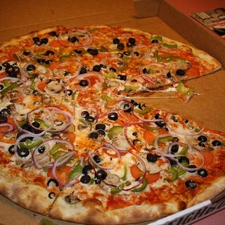
24 of the 80 COCO categories over 25K NSD stimulus images (shown here), labeled by CLIP at confidence > 0.9. Trials run 4 s apart, so each clip mixes responses to several images.
Raw accuracy against held-out subjects. The dashed line is chance: always guessing the majority class, 17% on Task21 and 7% on COCO24.
Baseline one: a linear model on functional connectivity. No deep learning, and it already reaches 82% on Task21.
The models as originally evaluated. Six of seven prior models sit at chance; none of the seven used coordinate normalization.
Same weights, one preprocessing fix. Shared coordinate normalization moves six models by 43 to 76 points.
Baseline two: an off-the-shelf video foundation model, zero brain data. MAE-st beats every prior fMRI model; CortexMAE-F leads both tasks.
A subject-specific MLP trained directly for COCO24 reaches 64%. This is task training, not a foundation model.
Six subject-trait benchmarks, one protocol: logistic probe, balanced accuracy, 100 random splits. Chance is 25% for 4-way age and 50% for sex and diagnosis.
Age and sex spread the models apart. The video FM does not win a trait task, and most diagnosis results remain near the connectome baseline.
Five corpus sizes, 0.35M to 6.6M frames, two repeats each, one recipe. Best validation loss on held-out HCP-YA subjects.
In-distribution, loss follows a strict power law: fit on the three smallest corpus sizes (solid), extrapolated to the rest (dashed).
On NSD, loss improves but bends away from its own small-data law. Transfer does not ride the in-distribution trend.
Five encoders, depth 3 to 15 (1.6M to 168M parameters), two repeats each, same data, same schedule. Validation loss on held-out HCP-YA.
A power law fit on the three smallest models (solid) promises continued gains at ten times the parameters (dashed).
Both validation sets flatten at depth 9, 36.8M parameters. Beyond that, parameters buy nothing on this data.
Within HCP-YA, more frames keep helping: three runs, one recipe, probed through training. The 7.4M run climbs to 99 on Task21 and 30 on COCO24.
Same recipe on UK Biobank, up to 36M frames and over three times the training. Every run plateaus lower.
Five times the frames still does not reach the HCP-YA line. The wall is not hours; it is composition: tasks, conditions, scanners, subjects.
Takeaways
Flat maps provide an efficient, geometry-aware input and lead dynamic state decoding.
Shared normalization moves scores by 40 to 75 points. State tasks separate models more clearly than traits.
More frames help in-distribution, but 36M UK Biobank frames do not beat 7M diverse HCP-YA frames.
Future directions
Build a structural MRI foundation model, then align it with CortexMAE so downstream models can use anatomy and functional dynamics together.
Pretrain on carefully harmonized multi-site fMRI spanning more tasks, scanners, and populations, with out-of-distribution generalization measured explicitly.
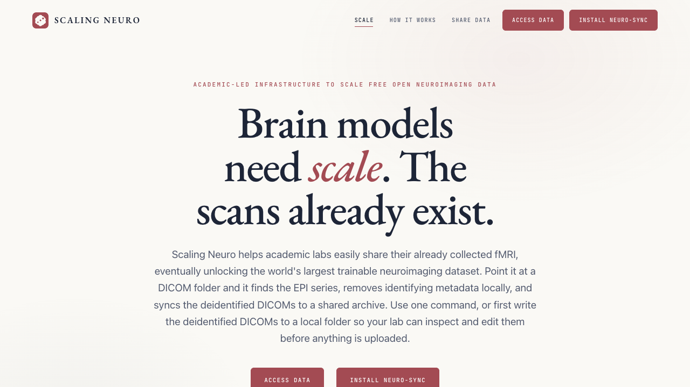
Contribute approved fMRI, test the uploader, or benchmark future models.
scalingneuro.org
Questions and collaborators welcome · scottibrain@gmail.com
CortexMAE
github.com/MedARC-AI/CortexMAE
Model code, weights, 50+ checkpoints
Blog post: sophont.med/blog/cortexmae
Brainmarks
github.com/MedARC-AI/Brainmarks
Benchmark code, curated data, evaluation protocol
Scaling Neuro
scalingneuro.org
Join the shared open fMRI archive
MedARC
medarc.ai
Our open research community
Connor Lane · Mihir Tripathy · Leema Krishna Murali · Ratna Sagari Grandhi · Shamus Sim Zi Yang · Sam Gijsen · Debojyoti Das · Manish Ram · Utkarsh Kumar Singh · Cesar Kadir Torrico Villanueva · Yuxiang Wei · Will Beddow · Gianfranco Cortés · Suin Cho · Daniel Z. Kaplan · Benjamin Warner · Tanishq M. Abraham · Paul S. Scotti
MedARC · Sophont · Baylor College of Medicine · University of Florida · University of Tübingen · Georgia Tech
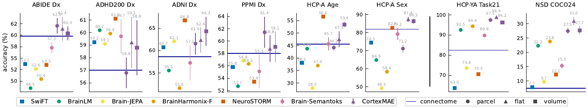
The benchmark spans age, sex, four diagnoses, task state, and visual semantics.
| Source | Target | Train / val / test | Classes | Metric |
|---|---|---|---|---|
| ABIDE | Autism diagnosis | 578 / 124 / 124 | 2 | Balanced accuracy |
| ADHD200 | ADHD diagnosis | 301 / 64 / 65 | 2 | Balanced accuracy |
| ADNI | Alzheimer's diagnosis | 328 / 41 / 41 | 2 | Balanced accuracy |
| PPMI | Parkinson's diagnosis | 463 / 99 / 100 | 2 | Balanced accuracy |
| HCP-A | Age / sex | 455 / 53 / 52 and 471 / 58 / 55 | binary | Balanced accuracy |
| HCP-YA | Task21 | 19K / 4K / 5K clips | 21 | Raw accuracy |
| NSD | COCO24 | 33K / 5K / 5K clips | 24 | Raw accuracy |
Trait results use 100 randomized splits. State results use fixed held-out-subject splits.
| Input | Train time | Parameters | FLOPs | Encode speed | Decode speed |
|---|---|---|---|---|---|
| Parcels | 11 h | 85M | 89G | 10K fps | 60K fps |
| Flat map | 28 h | 86M | 92G | 9K fps | 4K fps |
| Volume | 50 h | 87M | 116G | 8K fps | 2K fps |
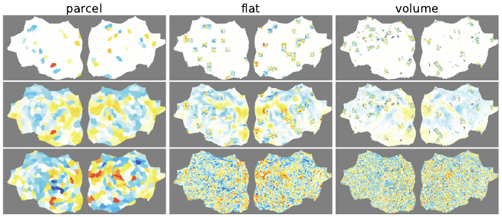
Top: masked input
Only 10 percent of tubes remain visible.
Middle: model reconstruction
Predicted values fill the masked locations.
Bottom: ground truth
The objective is applied in each native representation.
| Training / evaluation normalization | HCP-A age | HCP-A sex | Task21 | COCO24 |
|---|---|---|---|---|
| global + coordinate + frame | 48.1 | 87.6 | 98.8 | 31.4 |
| global + coordinate | 50.8 | 87.3 | 97.7 | 26.3 |
| global only | 40.2 | 79.1 | 16.1 | 5.5 |
| global train, coordinate at evaluation | 40.8 | 74.5 | 74.9 | 9.5 |
A probe cannot recover spatial correspondence the encoder never received consistently.
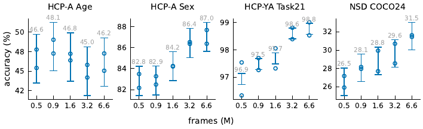
Largest vs smallest pretraining subset: approximately +5 percentage points on NSD COCO24.
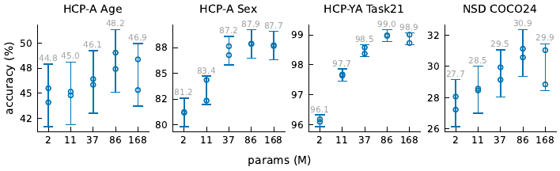
Depth 9, about 37M encoder parameters, is already near the practical plateau.
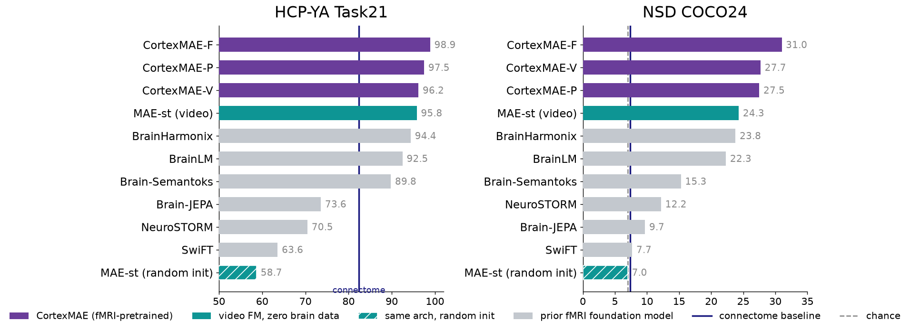
Same architecture with random init collapses (58.7 Task21, 7.0 COCO24): the pretrained video weights do the work. Trait scores are on par with all models, consistent with unreliable trait benchmarks.
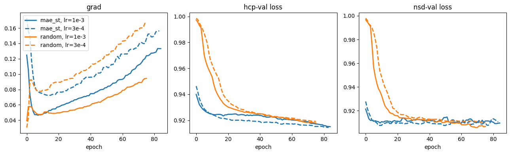
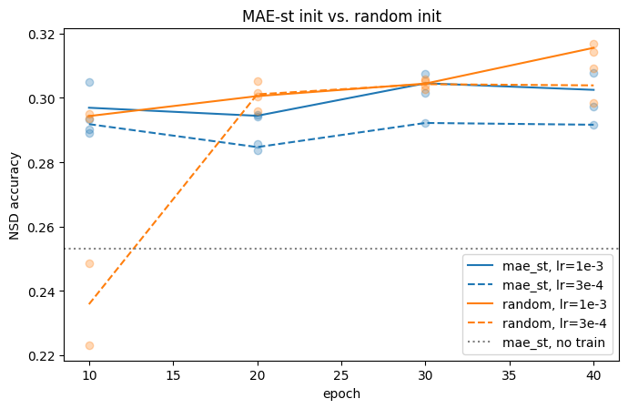
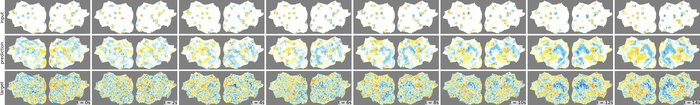
Held-out HCP-YA subject. Top: 90% masked input. Middle: prediction. Bottom: ground truth, 8 frames at 2-second spacing.
400 Schaefer region averages per frame.
400 patches of 4 × 1
85M params · 11 h train
77K cortical pixels on a 224 × 560 image.
364 patches of 4 × 16 × 16
86M params · 28 h train
132K cortical voxels on a 91 × 109 × 91 grid.
465 patches of 4 × 8 × 8 × 8
87M params · 50 h train
Same ViT-B encoder, same MAE-st recipe, similar patch counts. Only the input changes.